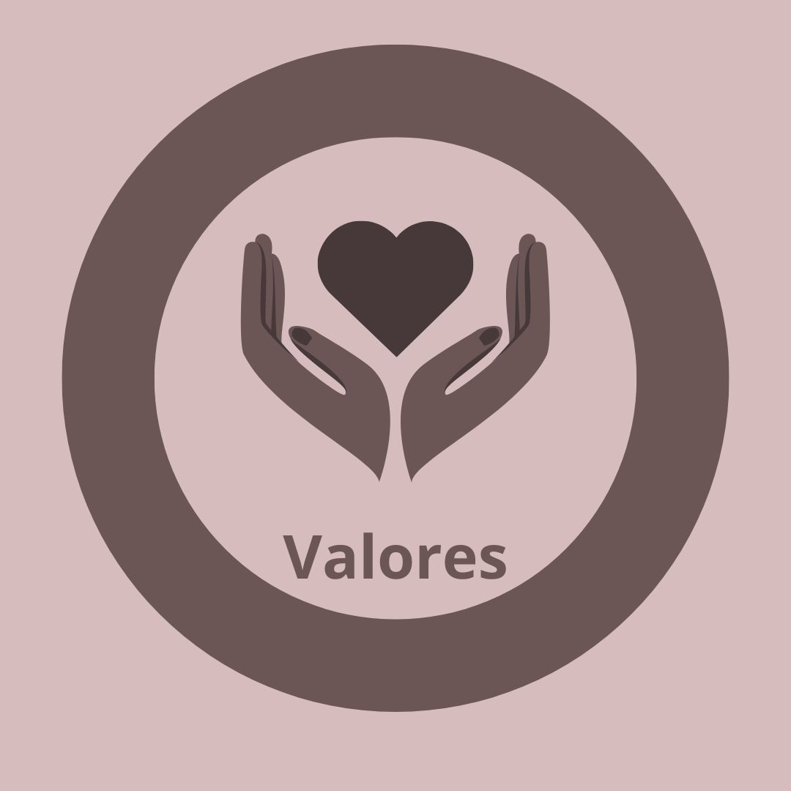
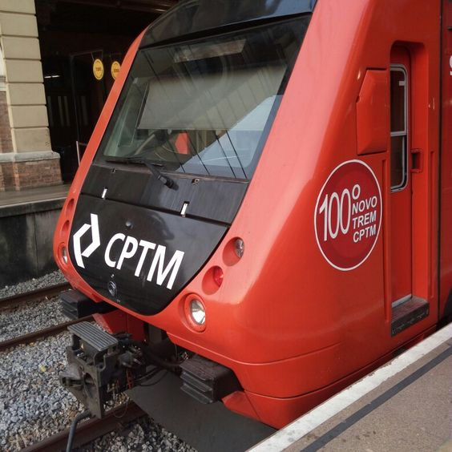

Visão Geral
- Hoje a empresa, com suas 57 estações operacionais, atende 18 municípios e se apresenta como elo fundamental do ecossistema da mobilidade dentro da Região Metropolitana de São Paulo.
- Algumas linhas do sistema estão passando por obras de infraestrutura: modernização dos sistemas de sinalização, telecomunicações, energia, rede aérea e via permanente.
- As estações mais antigas estão sendo modernizadas e a frota de trens foi renovada.
- 57 estações, das quais 43 acessíveis.
- No total são 196 km de extensão, somando as 5 linhas.
Missão
Prestar serviços de transporte propiciando mobilidade com excelência, sustentabilidade e acesso a serviços associados, que tornem a experiência de optar pela CPTM única.
Visão
Ser, de modo sustentável, o elo fundamental na cadeia intermodal de transporte de passageiros no Estado de São Paulo e a referência em projetos ferroviários, aprimorando experiências em mobilidade humana.

Valores
- Comprometimento com transparência e integridade;
- Atitude de Dono em que cada funcionário tem o poder de fazer a diferença;
- Respeito ao meio ambiente e aos valores das comunidades;
- Zelo inegociável pela melhor técnica;
- Foco na inovação e empreendedorismo.

Objetivos Estratégicos
- Valorizar o capital humano em um ambiente diverso, inclusivo e seguro;
- Aprimorar a gestão financeira e de custos, o aumento da geração de receitas e a potencialização do objeto social da CPTM;
- Alcançar a excelência na gestão de projetos, processos e serviços administrativos, bem como a promoção de uma comunicação eficaz, de inovação constante e da adoção inteligente da tecnologia;
- Promover a sustentabilidade visando a conformidade ambiental, ecoeficiência e economia de baixo carbono;
- Elevar a eficiência operacional e a gestão dos ativos da CPTM, visando melhorar a experiência e a jornada do cliente;
- Expandir os serviços de transporte aumentando a participação da CPTM no estado de São Paulo.